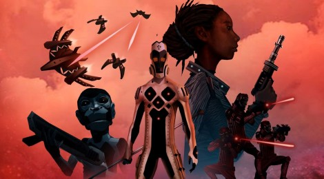

The Walking Dead: Not Tomorrow Yet Review
Natalie Maggiore's Springtime Game-Cation


by Emma Lawson
March 12, 2016
There are a ton of fan fiction sites out there in the world, but everyone's got their favorite. What does your favorite fanfiction site of choice say about you? Well, we're here to let you know...
by Jen Para
March 1, 2016
Contrary to popular belief, superheroes don’t only reside in comic books and films. They’re very alive in novels and poetry...
by Jen Para
Feb. 29, 2016
Imagine a show where three actors take a literary classic and turn it into slapstick humor and puns SO BAD that you find yourself chuckling involuntarily. The three actors in question Dan Clarkson, Jeff Turner and Natalie Cheetz (well, technically four if you include a talking portrait) perform all 60 Sherlock Holmes stories in just 80 knee-slapping minutes...
by Mollie Barnes
Feb. 19, 2016
*THIS ARTICLE CONTAINS SPOILERS ABOUT THE LAST SEASON OF GAME OF THRONES* There are many things that define a person...
by Emma Lawson
Feb. 17, 2016
Newsletters are back in fashion (thank you, Lena Dunham) and Fangirl has found your new favorite! The Rec Center is a weekly newsletter full of fandom news, articles, and most importantly, fanfic recommendations...